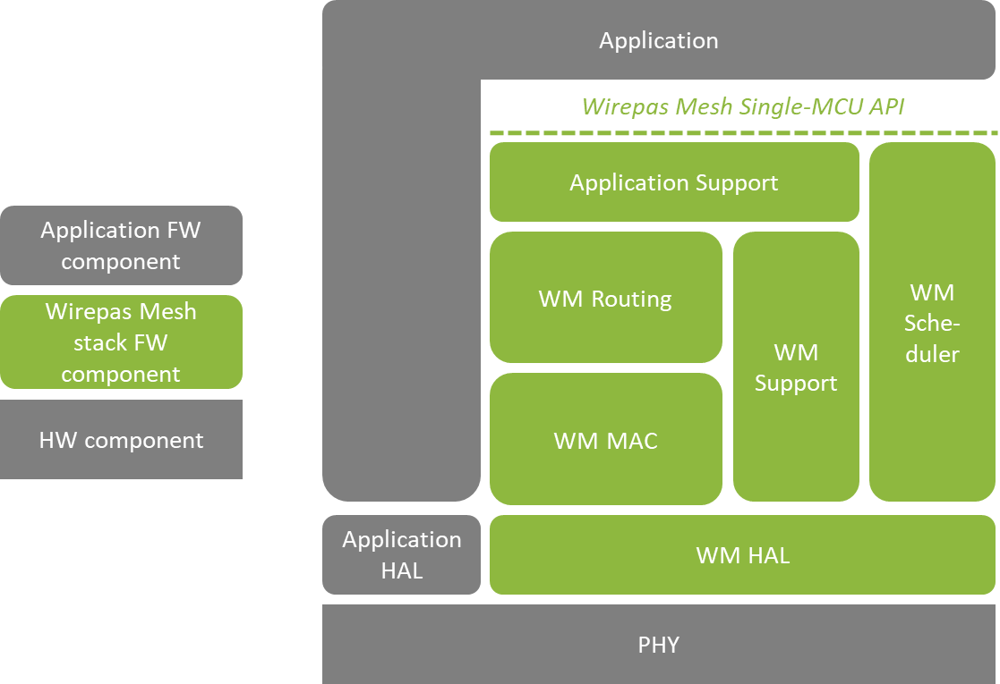

|
Wirepas Single-MCU SDK
|
|
Wirepas Single-MCU SDK
|
The Single-MCU operation allows an application to run on the same chip with Wirepas Mesh stack.

Main components are following:
Application firmware includes the application logic. There can be multiple applications (i.e. different kind of devices) in the same network. For example lighting network may contain lighting control switches and LED drivers.
With the provided SDK, a customer can write own application, build it, and update a Wirepas Mesh mesh network with the generated image (application + Wirepas Mesh Stack).
Single-MCU API Operation Principle describes the operation principle of the interface between the application and Wirepas Mesh stack. Memory partitioning and different regions are explained are described. Different ways the application is scheduled and the MCU accessed cooperatively.
SDK Environment describes the SDK package contents and available free processor resources for application.
How to develop applications with Single-MCU SDK describes guidance to write first application and various tips and recommendations for application development.
This is commonly various software components for peripheral usage, such as sensors/actuators and communication interfaces. Some of those are delivered as part of the SDK. This also contains drivers made by user of the SDKs, commonly shared between different _applications.
For HAL services offered by the SDK, see hal_api.
Stack includes the Wirepas Mesh communication stack and Wirepas scheduler for enabling the application operation in the same MCU. Wirepas Mesh HAL includes all hardware abstractions and drivers needed by the stack, such as a radio driver. Note that drivers for perhipherals that are not needed by the stack itself, are not implemented in stack.
Wirepas Mesh scheduler provides priority-based cooperative scheduling, i.e. all the tasks are run to completion. The tasks are scheduled based on their priorities and their execution times. The Wirepas Mesh stack has strict real-time requirements (accurate synchronization of messaging) and has the highest priority. Thus, it is not recommended to do processing intensive (time consuming) tasks on the application side. Real-time guarantees are not provided to the application.
Wirepas Mesh stack provides Wirepas Mesh Single-MCU API for application to use stack services and run tasks on the MCU.
Application API describes the programming interface.
This includes all the hardware of the device including the processor core, radio for wireless communication and application-specific peripherals.
Peripherals can be grouped into three categories:
For details on this, check EFR32 resources or Nordic nRF52XXX resources according to your architecture.
#endif /* SOURCE_APP_DOC_H_
 1.8.8
1.8.8